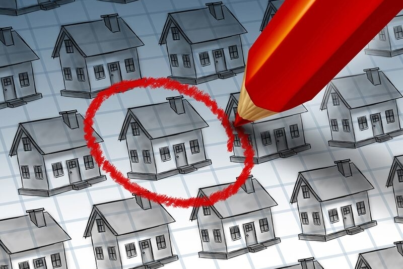

Having finished college, it is time to have a home, whether it's an apartment or commiting to a house. Currently not too sure whether to stay near parents or not, but even my parents would agree to go to where the money is.
Finding a Home

Dieting / Cooking

I most likely was living an unhealthy life style in college, and health should be a top priority at this age. Thus, I should maintain/improve my health by doing atleast some of these practices:
- Going on Runs REGULARLY
- Limit Eating Out - Around 3 times per week to focus on meal preping -
- Be comfortable in a sport and hopefully a community/team
- WATER DRINK WATERR!!11!!
Connecting to Culture

One of my biggest fears is being disconnected from my culture. To prevent this, I will want to travel to my country of Vietnam occasionally to enhance
speaking and to live the lifestyle.
I WON'T LEAVE MY CULTURE BEHIND